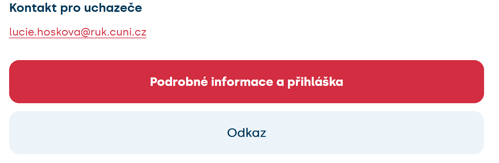
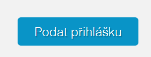
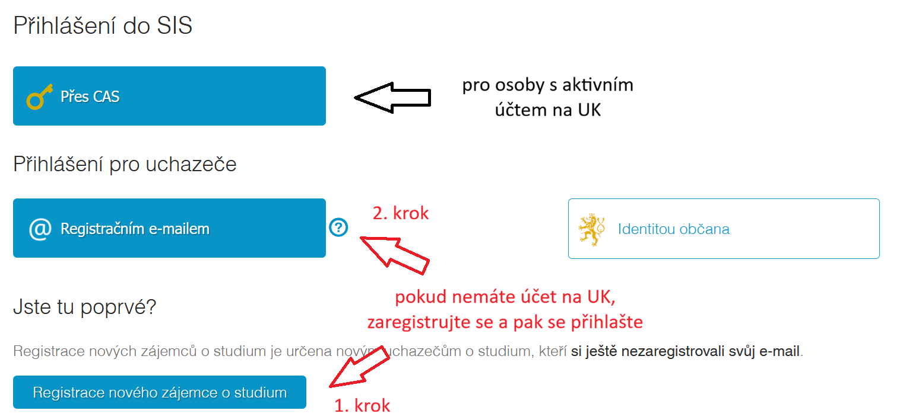
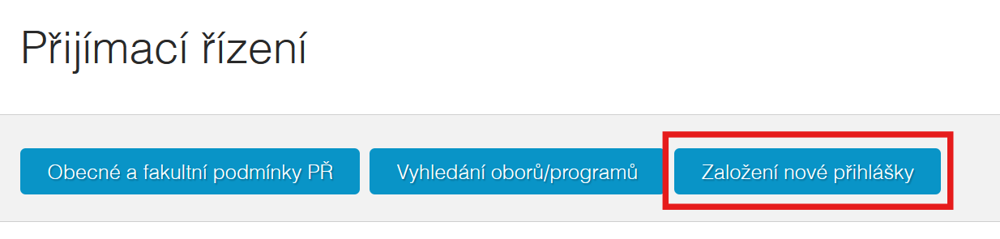
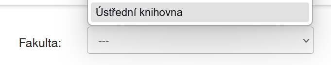
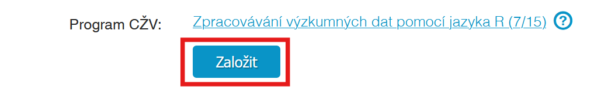

Zpracovávání výzkumných dat pomocí jazyka R
O kurzu
Schopnost používat počítačový software či skriptovací jazyky pro potřebu analýzy dat patří v současné době k nutnému repertoáru znalostí vědeckých a akademických pracovníků. V rámci tohoto kurzu se naučíte zpracovávat svá výzkumná data pomocí open source jazyka R v prostředí programu RStudio.
Kapacity na tento běh kurzu jsou již naplněny, přihlášení do dalšího běhu kurzu se znovu spustí během konce roku 2026.
Pokud chcete být o spuštění informováni, kontaktujte mě na lucie.hoskova@ruk.cuni.cz.
Na kurz se přihlašuje skrz portál Centra pro celoživotní vzdělávání UK dostupném zde. Podrobný návod provádějící postupem registrace naleznete na Návod na přihlášení.
Cíl kurzu
Cílem kurzu je vybavit účastníky praktickými dovednostmi pro efektivní práci s daty v prostředí R a RStudia tak, aby dokázali samostatně zpracovávat, analyzovat a prezentovat výsledky svých výzkumů. Naučí se systematicky organizovat projekty, připravit a transformovat data do podoby vhodné pro vizualizaci a analýzu. Součástí je i rozvoj schopnosti kriticky vybírat a používat statistické a vizualizační metody, interpretovat jejich výstupy a zohledňovat limity jednotlivých postupů. Absolventi kurzu tak budou schopni aplikovat R ve vlastní výzkumné praxi, posílit kvalitu svých analýz a zvýšit jejich transparentnost i důvěryhodnost.
Náplň lekcí
Kurz je koncipován jako série deseti obsahově na sebe navazujících přednášek. Obsah je rozdělen na tři sekce:
- úvod do R a příprava dat pro následující analýzu
- vizualizace dat,
- statistická analýza.
Přehled náplně jednotlivých lekcí se nachází v sylabu kurzu.
Komu je kurz určen?
Teto kurz je cílen především na osoby, které se věnují analýze výzkumných dat. Může se jednat jak o akademiky a jiné výzkumníky a výzkumnice, ale také o vědeckou podporu; osoby, které pomáhají těmto osobám pracovat s jejich daty (například data stewardi).
Určen je převážně pro osoby, které jsou již aktivně součástí pracovního procesu, a nemohou si tak dovolit docházet každý týden na kratší lekce uprostřed dne.
Podmínky pro úspěšné dokončení kurzu a získání mikrocertifikátu
Pro získání mikrocertifikátu je potřeba splnit následující podmínky:
- alespoň 80% docházka
- odevzdané průběžné domácí úkoly
- vypracování závěrečného projektu
V případě nemoci či jiné neočekávané situace, která by způsobila dlouhodobou nepřítomnost, bude zajištěna individuální náhrada výuky.
Místo a čas výuky
Výuka bude probíhat každé druhé úterý v měsící v průběhu podzimního semestru (půlka září až začátek února). Termíny jednotlivých lekcí jsou vypsány v sylabu.
Čas výuky je 09:00-12:00 (včetně přestávek).
Výuka je pouze v prezenční formě a odehrává se v prostorách Ústřední Knihovny UK.
učebna 216
José Martího 407
Ústřední Knihovna UK
Praha
Učebna má k dispozici náhradní notebooky v případě potřeby výjimečného zapůjčení během lekce.
Návod na přihlášení
1) Na stránce kurzu vyberte „Podrobné informace a přihláška“.

2) Sjeďte dolů po stránce “Detail programu s mikrocertifikátem” a po přečtení informací o kurzu klikněte na „podat přihlášku“.

3) Přihlašte se do systému. Pokud jste zaměstnanci či studenti UK, použijte přihlašovací systém CAS. Jinak je třeba, abyste si zaregistrovali e-mail a až poté se přihlásili.

4) Po přihlášení se Vám zobrazí stránka Přijímací řízení“. Klikněte na „Založení nové přihlášky“.

5) V seznamu fakult vyberte Ústřední knihovnu.

6) Vyberte kurz.

7) Vyplňte a odešlete přihlášku.